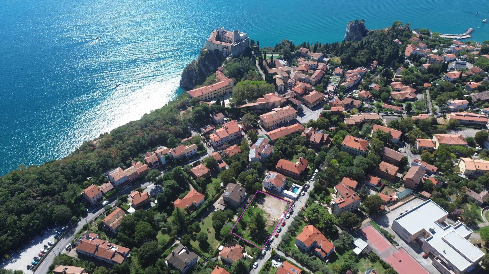
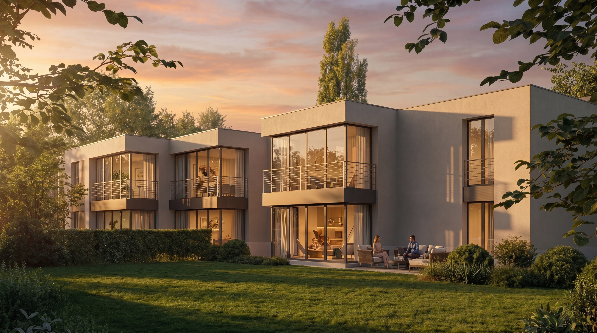
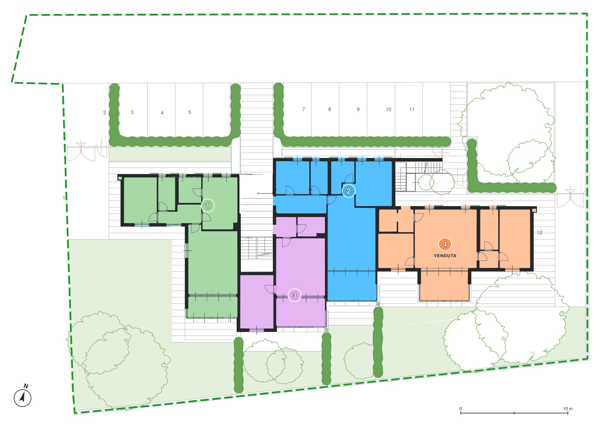
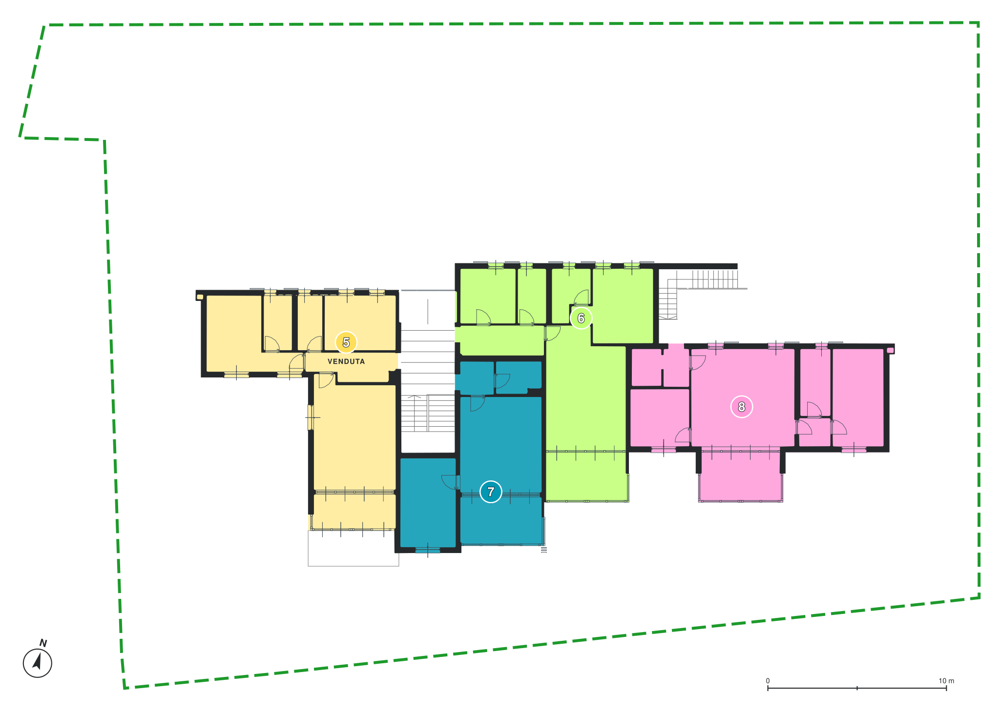
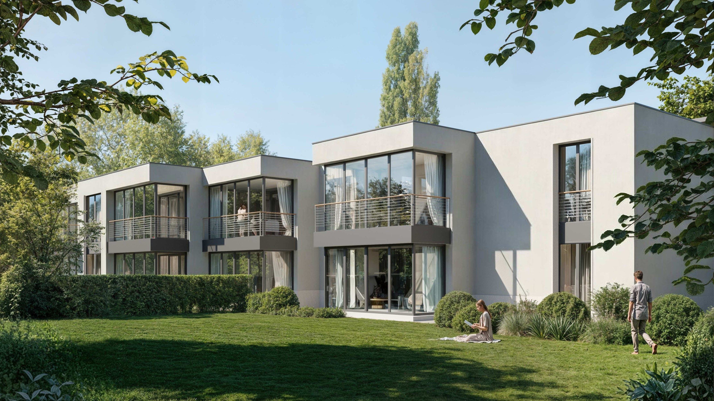
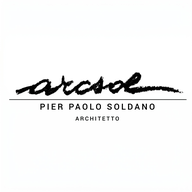

Duino Aurisina · Località Duino 69/A · Neubau
Elegie Duino — acht neue Wohnungen in Duino
Acht neue Wohnungen in dem Ort, an dem Rilke die Duineser Elegien begann. Sechs sind noch frei.
- Frei 6 von 8
- Zwei und drei Zimmer 70–102 m²
- Ab € 261.000 zzgl. MwSt.
- Klasse A laut Planung
- Übergabe voraussichtlich bis Juni 2028
Heute · 12. August 2026
Das Grundstück ist die Lücke zwischen den Häusern.
Ein Drohnenfoto: die Burg, das Meer, der Ort. Hinzugefügt ist nur der magentafarbene Umriss des Grundstücks von Elegie, vorn an der Straße.
Morgen · Übergabe voraussichtlich bis Juni 2028
An seiner Stelle: das Haus.
Wir haben es aus den Plänen des Studio Architettura Soldano in 3D nachgebaut, bis zu den Ausführungsplänen vom September: Maße, Fenster, Veranden, Ausrichtung. Der Ort ringsum ist der echte, aus den Vermessungsdaten der Region. Das Modell ist vermessen, nicht generiert.
01 · Der Ort
Der Ort, vermessen.
Duino ist ein Ort mit wenigen Straßen zwischen Karst und Meer. Vom Tor gehen Sie zu Fuß zum kleinen Hafen, zum Rilke-Weg und zur Burg, wo Rilke im Januar 1912 die Duineser Elegien begann: Daher haben diese Wohnungen ihren Namen. Mit dem Auto nach Triest und zum Flughafen.
- Schloss Duino380 m5 Min.
- Rilke-Weg, Beginn280 m4 Min.
- Hafen von Duino650 m9 Min.
- Bushaltestelle „Duino centro“200 m3 Min.
- Lebensmittelladen im Ort180 m2 Min.
- Grundschulen (italienisch und slowenisch)180 m2 Min.
- Rilke-Weg bis Sistiana2,3 km30 Min.
- Bucht von Sistiana4,2 km7 Min.
- Portopiccolo4,2 km7 Min.
- Monfalcone7,4 km11 Min.
- Grenze zu Slowenien (Jamiano)8,0 km11 Min.
- Flughafen Triest18,4 km18 Min.
- Triest, Piazza Unità23,9 km30 Min.

Erdgeschoss
Abends im Garten.
Jede Wohnung im Erdgeschoss hat ihren eigenen Garten, umschlossen von immergrünen Hecken: von 47 m² bis 280 m². Drei sind noch frei.
02 · Die Wohnungen
Die Wohnungen, Geschoss für Geschoss.
Im Erdgeschoss der eigene Garten, im Obergeschoss die Veranda. Tippen Sie auf eine Wohnung: Grundriss, Sonne auf der Veranda und Kosten öffnen sich.


Pläne nach den Ausführungsplänen des Studio Architettura Soldano (September 2026) neu gezeichnet; die Bäume sind nur zur Orientierung eingezeichnet.
Wie Sie zahlen
- 10 %bei der Reservierung
- 20 %beim Vorvertrag vor dem Notar
- 70 %beim notariellen Kaufvertrag, voraussichtlich bis Juni 2028
Was vor dem Kaufvertrag gezahlt wird, ist durch eine Bürgschaft gesichert, wie es das italienische Gesetz verlangt (Legislativdekret Nr. 122/2005). Preise zzgl. MwSt. Zu jeder Wohnung gehört ein Außenstellplatz; vier weitere sind für je 20.000 € zu haben.

Obergeschoss
Oben die Veranda.
Die Wohnungen im Obergeschoss haben eine verglaste Veranda mit Brüstung über den Gärten und in einigen Räumen das Holz des Dachs sichtbar.
03 · Das Licht
Die Sonne, Stunde für Stunde.
Die Veranden schauen nach Süd-Südost. Wählen Sie Tag und Uhrzeit: Licht und Schatten sind für Duino berechnet, mit dem echten Gelände, den Häusern und den Bäumen.
Die Sonne über Elegie
Stunden direkter Sonne auf der Verglasung der Veranda am gewählten Tag
Wie es berechnet ist
Berechnet auf der äußeren Verglasung jeder Veranda (bei Wohnung 1 an der Kante des Laubengangs), in anderthalb Metern Höhe, alle fünf Minuten, mit dem Gelände (LiDAR der Region), den Nachbarhäusern und dem Haus selbst. Die zweite Zahl zählt auch die Bäume als volle Kronen: die strengste Rechnung, denn im Winter sind viele Kronen kahl. Wolken gibt es keine; Auf- und Untergang gelten für den freien Horizont.
04 · Zeitplan
Übergabe voraussichtlich bis Juni 2028.
Die Baugenehmigung wird für Mitte November 2026 erwartet, und der Bauträger hat den Bauzeitenplan aufgestellt: hier die Baustelle Schritt für Schritt, vom heutigen Grundstück bis zur Schlüsselübergabe.
Bis November 2026 haben wir die Übergabe bis Ende 2027 angegeben. Das Genehmigungsverfahren hat länger gedauert als erwartet; jetzt hat der Bauträger den Bauzeitenplan aufgestellt, und jeder Schritt hat sein voraussichtliches Datum: Die Übergabe der Wohnungen und die notariellen Kaufverträge sind bis Juni 2028 vorgesehen.
- Erledigt
- Erwartet
- Voraussichtlich
- Frist für die Auswahl
April 2026
ErledigtLandschaftsschutzrechtliche Genehmigung
Erteilt am 17. April 2026.
Juni 2026
ErledigtVerkaufsstart
Bereits verkauft: 2 von 8.
August 2026
ErledigtDie alte Villa abgerissen
Das Grundstück ist frei: zu sehen auf dem Drohnenfoto vom 12. August und im 3D-Rundgang vom 15. September.
September 2026
ErledigtDie Ausführungspläne
Die Pläne des Studio Architettura Soldano vom 3. September: Das 3D-Modell dieser Seite ist auf ihrer Grundlage rekonstruiert.
November 2026
ErwartetBaugenehmigung und Baubeginn
Die Genehmigung wird Mitte November erwartet; der Baubeginn ist für denselben Monat vorgesehen.
In 3D ansehenJanuar 2027
VoraussichtlichFundament fertig
Fundamentbalken aus Stahlbeton.
In 3D ansehenMärz 2027
VoraussichtlichHolztragwerk fertig
Jetzt ist die Form des Hauses zu sehen.
In 3D ansehenJuni 2027
VoraussichtlichGebäudehülle geschlossen
Dach, Fenster, Wärmedämmung.
In 3D ansehenSeptember 2027
VoraussichtlichFassaden fertig
Das Gerüst wird abgebaut.
In 3D ansehenOktober 2027
VoraussichtlichInnenausbau
Die Arbeiten an Böden, Bädern und Türen beginnen.
In 3D ansehenApril 2028
VoraussichtlichFertigstellung und technische Abnahmen
Die Fertigstellung ist für den 30. April 2028 vorgesehen.
In 3D ansehenBis Juni 2028
VoraussichtlichÜbergabe und Kaufverträge
Die Schlüssel zu den Wohnungen, mit dem notariellen Kaufvertrag.
In 3D ansehen
Wer heute kauft, Schritt für Schritt.
- 10 %
Die Reservierung
Ist die Wohnung gewählt, unterschreibt man das Kaufangebot und zahlt 10 % des Preises.
- 20 %
Der Vorvertrag, beim Notar
Für Wohnungen, die erst noch gebaut werden, schreibt das italienische Gesetz den Notar vor: Im Vorvertrag stehen die Übergabefrist und die Sicherheiten, und was vor dem Kaufvertrag gezahlt wird, ist durch eine Bank- oder Versicherungsbürgschaft gesichert (Legislativdekret Nr. 122/2005).
Ihre Auswahl
Ausstattung und Haustechnik werden schriftlich gewählt, zu drei Stichtagen: siehe daneben.
Die Baustelle aus der Nähe
Baustellenbesuche unterliegen Sicherheitsregeln: Zugang und Besuchskalender stimmen wir mit dem Bauträger ab und teilen sie den Käufern mit.
- 70 %
Kaufvertrag und Übergabe
Vorgesehen bis Juni 2028, nach der Fertigstellung und den technischen Abnahmen. Bei der Beurkundung des Kaufvertrags übergibt der Bauträger auch die zehnjährige Versicherung für das Gebäude.
Prozentsätze vom Preis, ohne MwSt. Der Schutz des Legislativdekrets Nr. 122/2005 gilt für Käufer, die natürliche Personen sind; die Einzelheiten regeln Kaufangebot, Vorvertrag und Notar.
Ihre Auswahl, drei Fristen.
Damit die Baustelle nicht stockt, werden die Ausbaumaterialien im Schnitt 45 Tage vor dem Einbau bestellt, die Innentüren etwa 90 Tage vorher. Deshalb teilen die Käufer ihre Auswahl – auch Sonderwünsche über die Baubeschreibung hinaus – schriftlich zu drei Stichtagen mit:
Bis zum 28. Februar 2027
Haustechnik und Raumaufteilung
Steckdosen, Lichtauslässe, Daten und TV, Hausautomation, Küchenanschlüsse; eventuelle Änderungen der Raumaufteilung und der Anschlüsse und Abflüsse der Bäder.
Bis zum 30. Juni 2027
Böden, Fliesen, Türen
Badfliesen, Feinsteinzeug, Parkett der Schlafzimmer, Innentüren mit Oberflächen und Farben: Die Türen haben die längste Lieferzeit.
Bis zum 30. September 2027
Sanitärobjekte und Armaturen
Weichen sie von der Baubeschreibung ab, müssen sie zu den bereits ausgeführten Anschlüssen passen.
Nach jeder Frist wird die Standardausstattung der Baubeschreibung eingebaut; eine spätere Änderung wird im Einzelfall geprüft, nach Kosten, Technik und Zeit. Wie man eine Änderung beantragt, stimmen wir mit dem Bauträger ab und teilen es den Käufern mit.
Wir berichten, Schritt für Schritt.
Jeden Meilenstein veröffentlichen wir hier, mit Datum und Bildern der Baustelle, und schicken ihn per E-Mail an die Käufer und an alle, die darum bitten.
Neuigkeiten per E-Mail erhaltenDas sind Prognosen, keine Zusagen. Der Bauzeitenplan liegt in seiner ersten Fassung vor, und die Baugenehmigung ist noch nicht erteilt: Die Termine können sich ändern, auch erheblich, etwa durch die Dauer des Genehmigungsverfahrens, das Wetter, Lieferungen oder die beteiligten Firmen. Für Käufer gilt die Übergabefrist, die in ihrem Vorvertrag steht.
Stand: 6. November 2026, auf Grundlage der ersten Fassung des Bauzeitenplans des Bauträgers.
05 · Bauweise
Die Baustelle, Monat für Monat.
Beim Scrollen entsteht das Haus so, wie es der Bauzeitenplan vorsieht, vom heutigen Grundstück bis zur Schlüsselübergabe.
Es beginnt mit dem Grundstück.
Frei seit dem Abriss im August. Die Baugenehmigung wird Mitte November erwartet, der Baubeginn ist für denselben Monat vorgesehen.
Das Fundament.
Fundamentbalken aus Stahlbeton mit umgekehrtem T-Querschnitt, bemessen nach dem geologischen Gutachten und der Statik; unter dem Erdgeschossboden ein belüfteter Hohlraum.
Das Holztragwerk.
Wände und Decken aus X-LAM, kreuzweise verleimte Fichtenplatten mit CE-Kennzeichnung: Jetzt ist die Form des Hauses zu sehen. Das Dach liegt auf Brettschichtholzbalken; in einigen Räumen des Obergeschosses bleibt das Holz sichtbar.
Die Gebäudehülle ist geschlossen.
Dach, Fenster und Wärmedämmung. Die Dämmung aus Steinwolle ist nicht brennbar (Klasse A1); die Fenster haben thermisch getrennte Rahmen in Anthrazitgrau und eine Zweifach-Wärmeschutzverglasung aus Verbundglas. Das mit Flusskies beschwerte Flachdach wird die Solarmodule jeder Wohnung tragen.
Fassaden fertig, Gerüst ab.
Ein Strukturputz in dunklem, warmem Grau, die mit der landschaftsschutzrechtlichen Genehmigung freigegebene Farbe; zur Straße hin Läden aus senkrechten Lamellen.
Innen: der Ausbau.
Böden, Fliesen, Türen: Die Auswahl der Käufer nimmt Gestalt an, Wohnung für Wohnung.
Fertigstellung und technische Abnahmen.
Gärten mit immergrünen Hecken und heimischen Karstpflanzen; Stellplätze aus wasserdurchlässigem Beton, jeder für eine Ladestation vorbereitet.
Die Schlüssel.
Übergabe der Wohnungen und notarielle Kaufverträge. Der Energieausweis wird nach der Fertigstellung ausgestellt: Klasse A NZEB ist der Planungswert.
Und innen: kein Gas.
- Luft-Wasser-Wärmepumpe: heizt, kühlt und bereitet Warmwasser
- Eine Photovoltaikanlage für jede Wohnung und ein eigener Zähler bis 6 kW
- Energieklasse A NZEB laut Planung
- Sicherheitstür (Widerstandsklasse 3 oder höher), Videosprechanlage, Vorbereitung für Alarmanlage und Hausautomation
06 · Wer dahintersteht
Drei Namen, eine Baustelle.
Baut
Ennio Riccesi Holding Entwickelt und baut das Projekt.
riccesi.eu ↗Plant

Studio Architettura Soldano Arch. Pier Paolo Soldano und Arch. Alessandra Belleli, Triest.
studioarchitetturasoldano.it ↗Verkauft
TriesteVillas Für Käufer von hier und aus dem Ausland.
triestevillas.com ↗
07 · Kontakt
Eine Besichtigung, nach Vereinbarung.
Die Baustelle, die Grundrisse, die Materialien: Schreiben Sie uns oder rufen Sie an, wir melden uns.
- Verkaufsbüro
- Via Torino 34, Trieste
Danke, Ihre Anfrage ist angekommen.
Wir melden uns so bald wie möglich. Für Dringendes: +39 331 8940822.